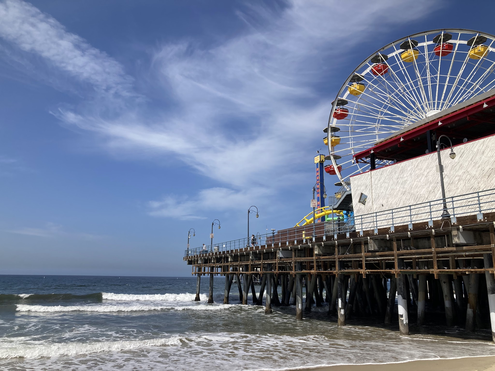
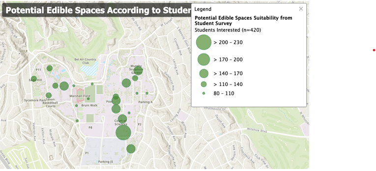
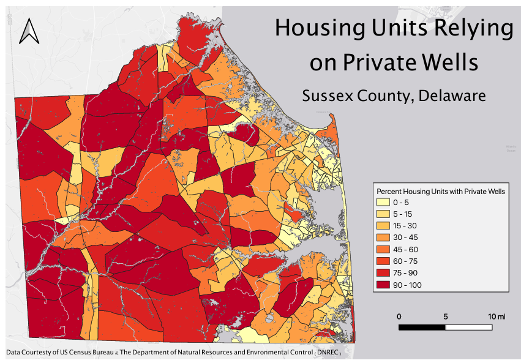
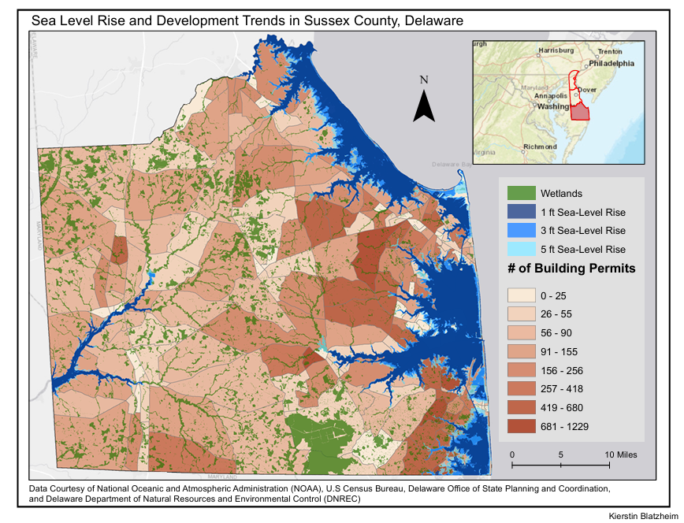
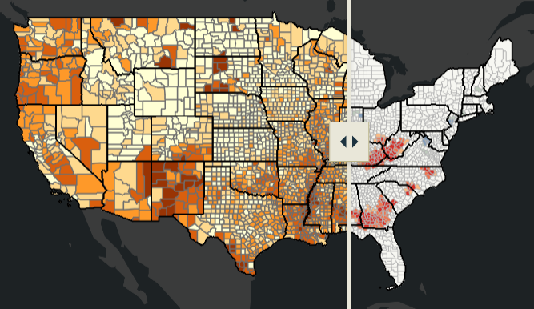

HOME
ABOUT ME
RESUME
PORTFOLIO
PORTFOLIO

Utilizing Sentinel2 Imagery to Measure Water Quality: A Los Angeles Case Study

Incorporating Edible Landscaping on UCLA's Campus

Impact of Sea Level Rise on Private Wells in Sussex County, Delaware

Overlap of Development in Sussex County, Delaware With Projected Sea-level Rise

SNAP Participation Across the United States